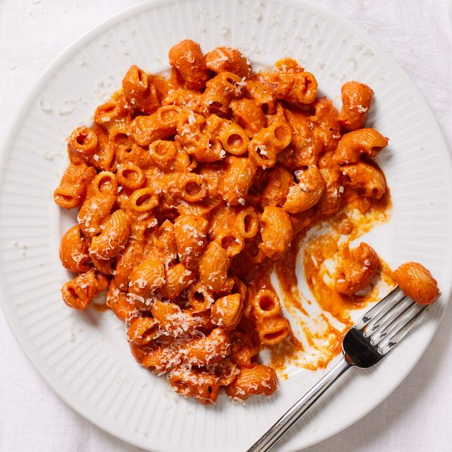

Spicy Rigatoni

The Spicy Rigatoni dish is perfect for a home dinner date
This irresistibly spicy, tangy, and creamy pasta dish is as close as you can get to the original Spicy Rigatoni Vodka from world-famous Carbone
Ingredients
- 14 oz of San Marzano tomatoes
- 1/2 lb rigatoni pasta
- 1/2 onion finely diced
- 3 garlic cloves finely minced
- 2 tbsp of chopped Calabrian chili pepper paste
- 1 1/2 tbsp of tomato paste
- 2 tbsp of vodka
- 1/4 cup heavy cream
- 1/2 tsp sugar or to taste
- 1/4 cup pasta water the water you cook the pasta in
- 1tbsp butter
- freshly grated parmesan cheese
- 1tbsp of olive oil
- salt and pepper to taste
Instructions
- Open up the can of san marzano tomatoes and crush everything by hand until a you get a nice consistency.
- In a large pot, heat some oil over medium heat. Add the onions and cook for 2-3 minutes. Stir in the garlic and calabrian chili pepper paste and cook for 1 minute.
- Add the tomato paste and cook for 2 minutes while stirring frequently. Pour in the vodka and cook for 1 minute.
- Add your san marzano tomatoes into the pot. Then add in your sugar, salt and pepper. Turn the heat to high and keep stirring your sauce for about 30-45 mins until its gets to a nice thick consistency and the excess liquid have evaporated. After that is done add in your heavy cream and stir it all together.
- Next bring a large pot of salted water to a boil. Cook the pasta in the salted water according to package instructions or until al dente. Once done cooking remove 1/4 cup of pasta water and add it your pasta sauce. Then drain the remaining liquid from your cooked pasta and add it to you sauce.
- Lastly, serve and add freshly grated parmesan cheese to your liking.